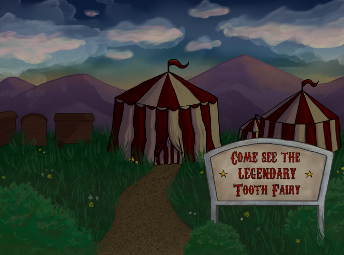

Portfolio Website
This website was originally created as a way to learn web design and development. Now it's a platform to showcase my coding projects, games, UI/UX, and art portfolios. I designed the layout using Figma and Krita, developed it with HTML, CSS and JavaScript using GitHub Pages. This project began in 2023, and I am continually making changes and finding new ways to improve it.
Popcorn Teeth
Summary
Popcorn Teeth is a horror visual novel that was created by students of the CPP Game Development Club from 2023-2024. The story follows Pita the Tooth Fairy, who has been captured by the Striking Light Circus. In a weakened state from the Ringmaster's abuse, Pita must confront the Circus' performers and recover her wand from the Ringmaster.
My Contributions
I was the lead programmer and background artist. I programmed all the dialog interactions, quick time events, animations and sound effects, and a custom achievement gallery. I implemented the script given to me by the writers and programmed 10 possible endings. In addition to programming I also created the background art for every scene in the game.
Recipe Book Mobile App
Summary
An Android App that allowed a user to store recipes on their phone. They could add, delete, and even upload recipes from the internet. Users can add tags to recipes in order to filter and search for specific meals.
My Contributions
I programmed the basic layout of the list of recipies and the recipe instructions, as well as created the functionality for creating and editting a recipe.


Mental Health Circle App
Summary
The app was designed to keep track of the user's mental state by providing daily quizzes to determine the user's mental state, and it took data from their health app and tracked their screen time on social media using an API. The app provided users with resources available to help. If the app detected that the user's mental state was getting worse, the app would send a text notification out to the user's choice of 5 contacts.
My Contributions
I set up the backend, using AWS and GraphQL to create the database and queries. I created a feature that would collect information from other apps, such as the health app or any fitness app that would collect fitness information. I programmed the login page that had dual authentication with a text message.